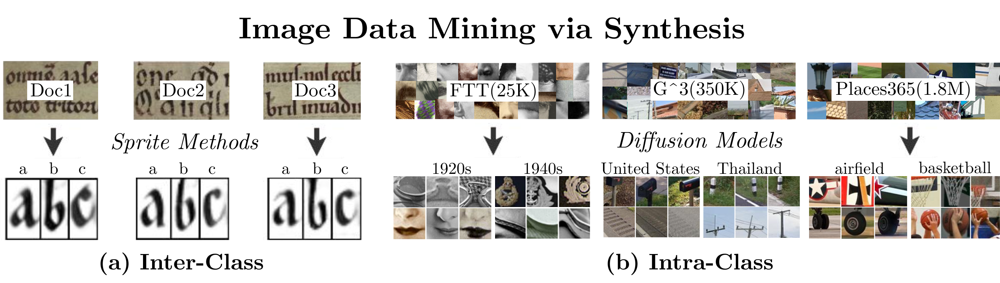
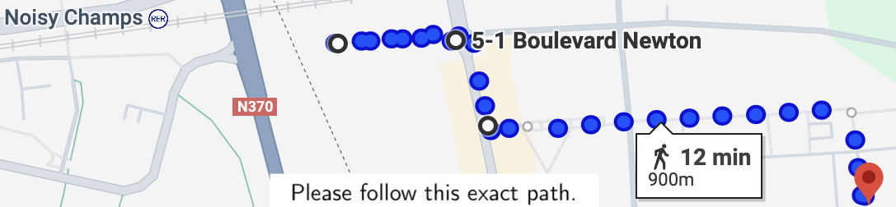

| Name | Institution | Role |
|---|---|---|
| Alexei A. Efros | UC Berkeley | President |
| Jean Ponce | École Normale Supérieure | Reviewer |
| Josef Sivic | École Normale Supérieure | Reviewer |
| Hadar Averbuch-Elor | Cornell University | Examiner |
| Shiry Ginosar | Toyota Institute of Technology | Examiner |
| Mathieu Aubry | École Des Ponts ParisTech | Advisor |
Image archives contain lots of hidden knowledge that researchers in the digital humanities would like to discover at scale. Much of this knowledge is visual, which makes challenging to either describe using textual descriptions, or to manually ground textual descriptions onto visual evidence. Given collections of images that are identified by general predefined classes, for example a type of script or the name of a country, the goal of this thesis is to develop machine learning approaches that can mine informative visual structure hiding behind those labels. Our work focuses on two specific problems of image data mining. The first, is to summarize and help refine existing typologies of handwritten characters. Character morphology has been central to the field of palaeography, where existing typologies are described through textual descriptions, hindering qualitative analysis. Our first contribution, the "Learnable Typewriter" achieves an explicit decomposition of a manuscript's text lines into small images of characters called sprites, which allows for an interpretable quantitative comparison. The second problem, is to summarize the visual structure that makes images, typical of their assigned label. Analyzing historical, or cultural image datasets, by counting the presence of predefined attributes often provides very general observations that can't focus on the visual details that are typical of an input label. In our second contribution, "Diffusion Models as Data Mining Tools", we leverage the abstract and scalable compositional synthesis capabilities of diffusion models to mine typical visual vocabularies from versatile labeled datasets, including portraits, geographical images, and scenes, of the order of thousand to million images.
| Document | Description | Size |
|---|---|---|
| Acknowledgements | Thesis acknowledgements | 0.5 MB |
| Introduction | Introduction and research context | 2.1 MB |
| Related Work | Review of prior research | 3.4 MB |
| Thesis (without Appendix) | Complete thesis without appendices | 8.2 MB |
| Full Thesis | Complete thesis with all appendices | 12.7 MB |
Timetable
| 5PM-6PM | 6PM-7PM | 7PM-8PM |
| Presentation | Questions | Decision |


Live: 5PM-6PM (CET)
The main part of the defence will be livestreamed on YouTube